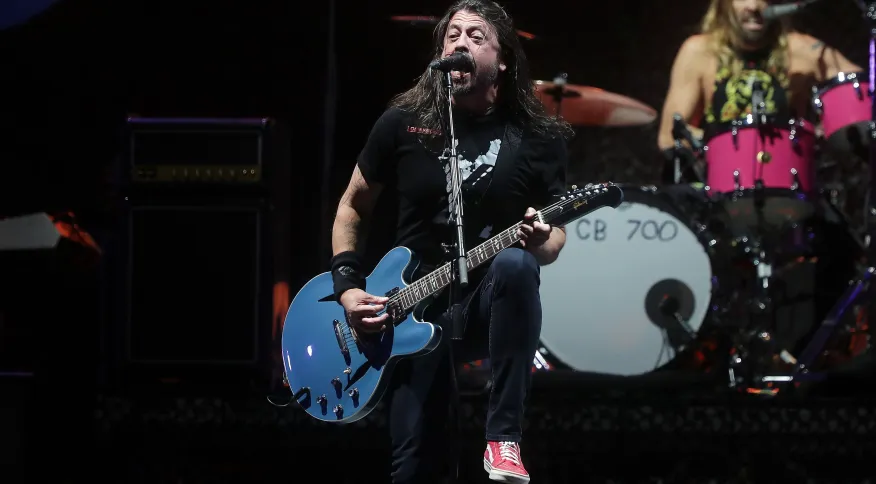
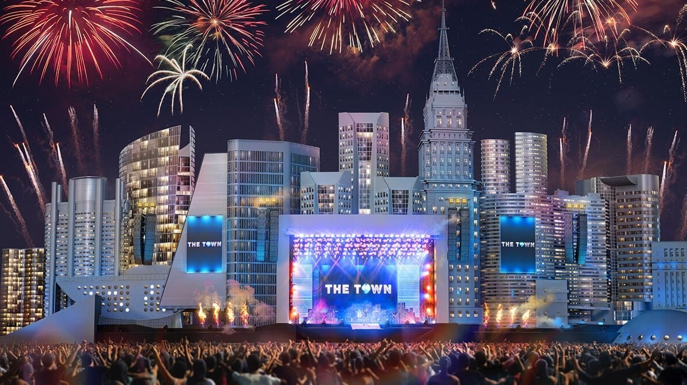

Foo Fighters e Bruno Mars esgotam ingressos; restam dias de Maroon 5 e Post Malone
Vendas para banda liderada por Dave Grohl foram encerradas no mesmo dia em que grupo
lançou música inédita e anunciou novo álbum para junho

Por Léo Lopes
A organização do The Town informou, na tarde desta quarta-feira (19), que estão esgotados os
ingressos para três dos cinco dias de festival: 3 e 10 de setembro, com Bruno Mars como
principal atração, e dia 9, encabeçado pelo Foo Fighters.
Ainda restam entradas para os dias 2 e 7 de setembro, dos headliners Post Malone e Maroon 5,
respectivamente. Os valores são de R$ 407,50 (meia-entrada) e R$ 815 (inteira).
O anúncio de que a banda liderada por Dave Grohl esgotou ingressos veio poucos minutos depois do
lançamento da primeira música do grupo desde a morte do baterista Taylor Hawkins.
Junto da divulgação do single “Rescued”, o Foo Fighters anunciou o lançamento de seu 11º álbum
de estúdio. “But Here We Are” chegará às plataformas de streaming com dez músicas inéditas no
dia 2 de junho.
Um comunicado divulgado à imprensa classificou o novo disco como “uma resposta brutalmente
honesta e emocionalmente crua a tudo que o Foo Fighters suportou no ano passado” e “uma prova
dos poderes de cura da música, amizade e família”.
Line-up completo do The Town:
Palco Skyline:
• 2 de setembro – Post Malone, Demi Lovato, Iggy Azalea, MC Hariel com MC Ryan SP e MC
Cabelinho
• 3 de setembro – Bruno Mars, Bebe Rexha, Alok, Luísa Sonza
• 7 de setembro – Maroon 5, The Chainsmokers, Liam Payne, Ludmilla
• 9 de setembro – Foo Fighters, Queens of the Stone Age, Garbage, Pitty
• 10 de setembro – Bruno Mars, H.E.R., Kim Petras, Iza
Palco The One:
• 2 de setembro – Racionais MC’s com Orquestra de Heliópolis, Criolo com Planet Hemp, Orochi com
Azzy, Tasha & Tracie com Karol Conká
• 3 de setembro – Seu Jorge, Leon Bridges, Ney Matogrosso, Matuê convida O Nordeste
• 7 de setembro – Ne-Yo, Masego, Angélique Kidjo, Maria Rita
• 9 de setembro – Barão Vermelho convidando Samuel Rosa, Wet Leg, Detonautas, Terno Rei convida
Fernanda Takai e Mahmundi
• 10 de setembro – Jão, Gloria Groove, Pabllo Vittar com Liniker e Jup do Bairro, Marina Sena
canta Gal Costa
Palco Factory:
• 2 de setembro – Teto, Kayback, Caio Luccas, Urias
• 3 de setembro – Luccas Carlos, Wiu, Veigh, Lia Clark
• 7 de setembro – Marvilla, Afrocidade, Larissa Luz, Hodari
• 9 de setembro – MC Don Juan, Yunko Vino, MC Dricka, Grag Queen
• 10 de setembro – Xênia França, Tássia Reis, Cynthia Luz, N.I.N.A
Palco New Dance Order:
• 2 de setembro – Batekoo aka Freshprincedabahia x Jujuzl x Kiara x Mirands, Tropkillaz – 10
Anos,
Osgemeos – Uma Experiência, Deekapz x Vhoor, Klean vs Klap, Forro Red Light e o Baile
Encarnado
• 3 de setembro – Carlos Capslock Showcase aka Belisa x Stroka x Tessuto, Ellen Allien x
Badsista,
Paul Kalkbrenner Live, Vitalic, Noporn Live, Carlos Do Complexo vs Rhr Live
• 7 de setembro – Gop Tun vs 28room+ Diogo Strausz Live feat Julia Mestre, Shermanology, Kerri
Chandler Live, Natasha Diggs Live Horn, L_cio Plants Live, Afterclapp x Shigara x Xaxim
• 9 de setembro – Mamba Negra Showcase feat Cashu + Paulete Lindacelva + Valentina Luz,
Badsista,
Malka, Venus aka Gueto Elegance feat Marina Lima, Inner City Live Bonus Set Kevin Saunderson,
Renato Cohen Live, Aerea Live, Kenya20hz apresenta Chaos Sonora
• 10 de setembro – Oddjs Aka Davis x Vermelho x Zopelar, Boratto & Emerson Live, Crazy P
Soundsystem, Lion Babe, Paradise Guerrilla, Dj Mau Mau B2b Etcetera

Palco São Paulo Square:
• 2 de setembro – Esperanza Spalding, Hermeto Pascoal, São Paulo Big Band convida Alma Thomas,
São
Paulo Big Band
• 3 de setembro – Esperanza Spalding, Johathan Ferr, São Paulo Big Band convida Analu & Kynnie,
São Paulo Big Band
• 7 de setembro – Stanley Jordan, Ivan Lins, São Paulo Big Band convida Paula Lima, São Paulo
Big
Band
• 9 de setembro – Stanley Jordan, Hamilton de Holanda, São Paulo Big Band convida Vanessa Moreno
e
Ana Cañas, São Paulo Big Band
• 10 de setembro – Richard Bona, Banda Mantiqueira e Mônica Salmaso, São Paulo Big Band convida
Jesuton e Luciana Mello, São Paulo Big Band